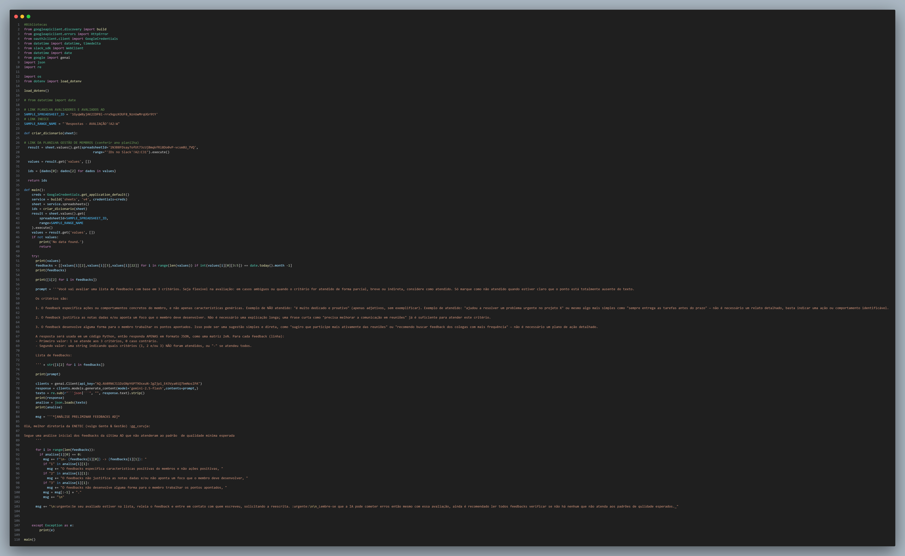
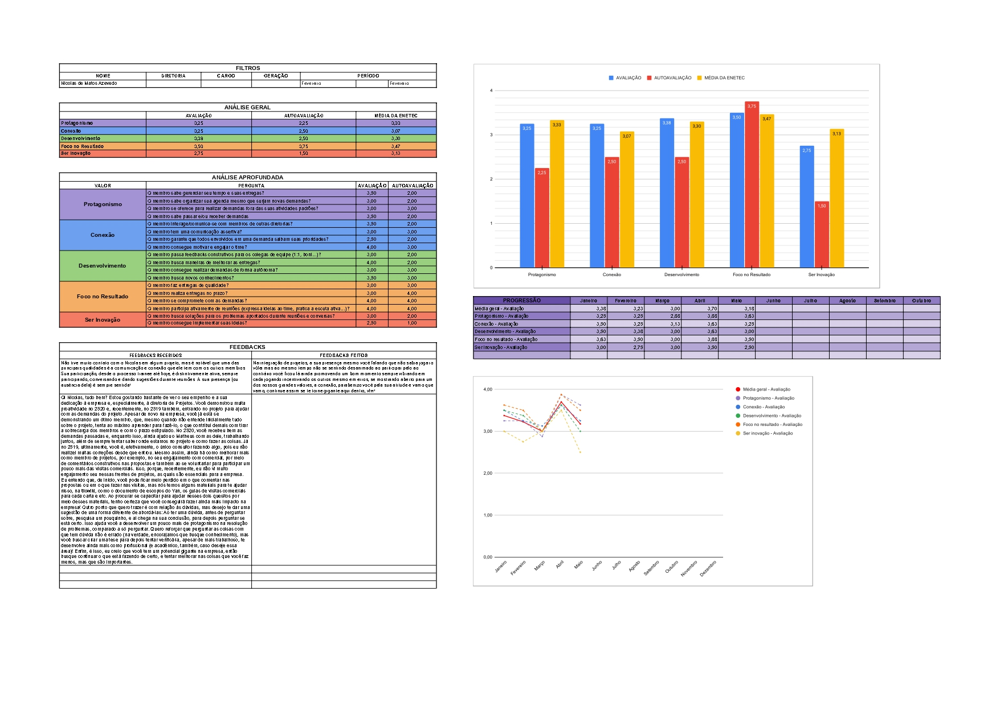

Reformulação da Avaliação de Desempenho
Problema / motivação
Uma das principais demandas relacionadas a gestão de pessoas que recebi quando entrei na área de Gente & Gestão foi relacionado a reformular a Avaliação de Desempenho da empresa, que na época havia se tornado um processo burocrático e sem impacto real na empresa.
Processo
Para contornar essa situação, além de um plano de ação para reestruturar a forma que os dados de desempenho e fitcultural eram coletados e apresentados na empresam isso em conjunto com meus colegas de equipe, mas além disso eu me empenhei em criar um planilha com um dashboard que exibe os dados que costumamos usar, além de integrar um sistema de IA que avaliava os feedbacks enviados nesse processo, evitando feedbacks que não focassem no desenvolvimento da equipe.
Resultado
O resultado foi uma reestruturação completa do processo que foi extremamente bem recebida pelas lideranças da empresa e que está em vigor até hoje na empresa, somando com uma otimização do tempo necessario para executar as etapas mais mecânicas e desgastantes desse proceso.

Farol Mensal
Farol MensalStack
- ESP32
- C++ / Arduino
- TP4056
- LDO (HT7333/ME6211)